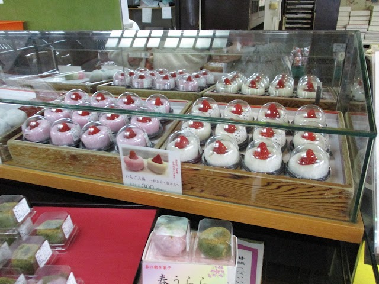
| 営業時間 | 月・火・水・木・金 9:00〜19:00 ／ 土・日 8:30〜19:00 |
|---|---|
| 定休日 | なし(要最終確認) |
| 住所 | 滋賀県草津市大路２丁目１３−１９ |
| 予約 | 要確認 — ☎ 077-566-2580 ／ 公式サイト |
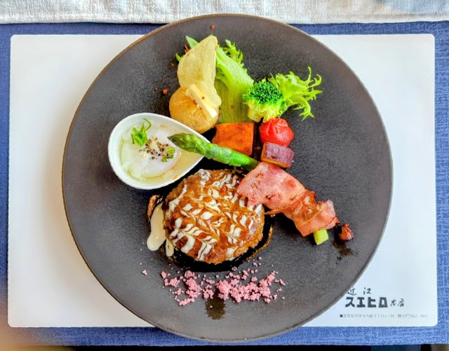
| 営業時間 | 火・水・木・金・土・日 11:00〜15:00, 17:00〜21:00 |
|---|---|
| 定休日 | 月曜 |
| 住所 | 滋賀県草津市大路３丁目１−３９ |
| 予約 | 可 — ☎ 077-562-3651 ／ 公式サイト |
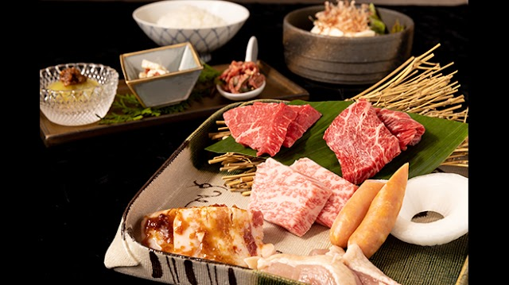
| 営業時間 | 月 11:30〜14:30, 17:00〜23:00 ／ 火・水・木・金 17:30〜23:00 ／ 土 11:30〜14:30, 17:00〜22:00 |
|---|---|
| 定休日 | 日曜 |
| 住所 | 滋賀県草津市大路１丁目２−８ ドルチェビル |
| 予約 | 可 — ☎ 077-598-6855 ／ 公式サイト |
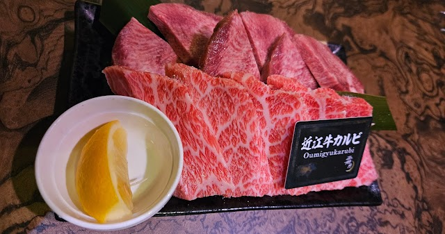
| 営業時間 | 月・火・水・木・金・土 17:30〜22:00 |
|---|---|
| 定休日 | 日曜 |
| 住所 | 滋賀県草津市大路１丁目１５−１ |
| 予約 | 可 — ☎ 050-5487-4897 ／ 公式サイト |
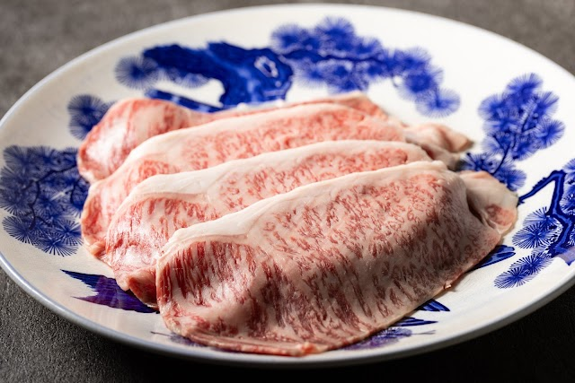
| 営業時間 | 月・火・水・木・金・土・日 17:30〜23:00 |
|---|---|
| 定休日 | なし(要最終確認) |
| 住所 | 滋賀県草津市渋川１丁目３−２４ ＬＡスクエア １Ｆ |
| 予約 | 可 — ☎ 077-599-1161 ／ 公式サイト |
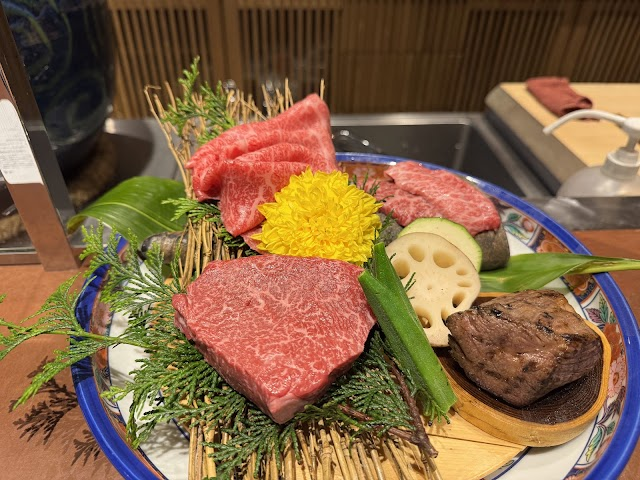
| 営業時間 | 月・火・水・木・金・土・日 18:00〜22:00 |
|---|---|
| 定休日 | なし(要最終確認) |
| 住所 | 滋賀県守山市守山１丁目４−２１ |
| 予約 | 可 — ☎ 077-596-3589 ／ 公式サイト |
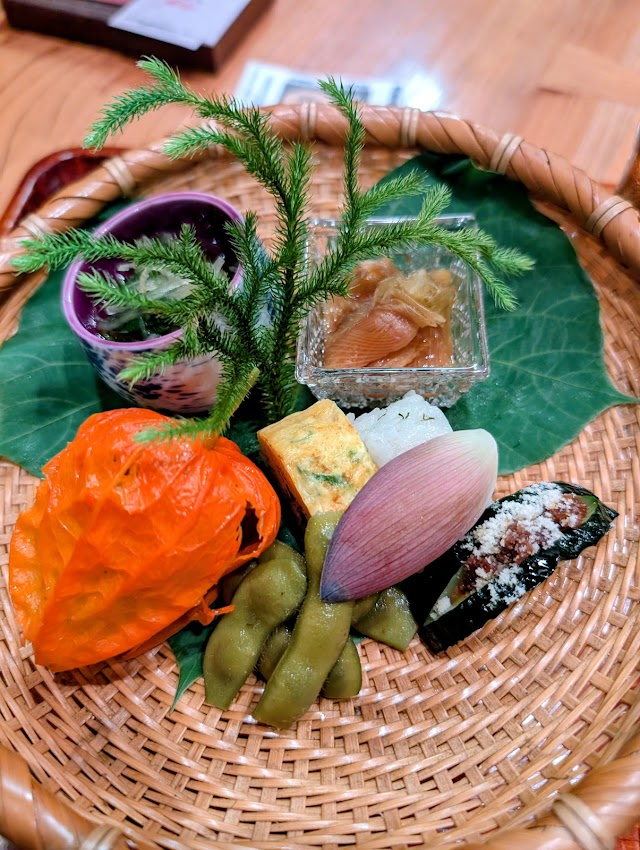
| 営業時間 | 月・水・木・金・土・日 12:00〜15:00, 18:00〜23:00 |
|---|---|
| 定休日 | 火曜 |
| 住所 | 滋賀県草津市大路１丁目１１−１４ B１ |
| 予約 | 可 — ☎ 050-5488-4517 ／ 公式サイト |
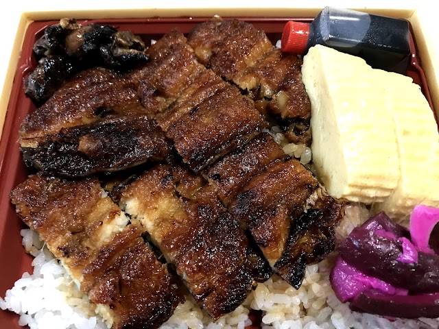
| 営業時間 | 月・火・木・金・土・日 11:00〜18:00 |
|---|---|
| 定休日 | 水曜 |
| 住所 | 滋賀県草津市上笠４丁目１８−１５ |
| 予約 | 要確認 — ☎ 077-564-5515 ／ 公式サイト |
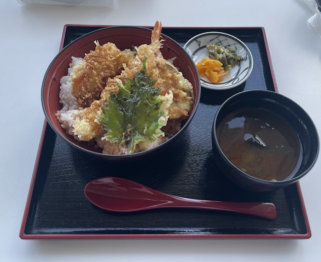
| 営業時間 | 火・水・木・金 11:00〜15:00 ／ 土・日 11:00〜16:30 |
|---|---|
| 定休日 | 月曜 |
| 住所 | 滋賀県草津市下物町１０９１ 駐車場 ディスカバリールーム |
| 予約 | 要確認 — ☎ 077-568-4819 ／ 公式サイト |
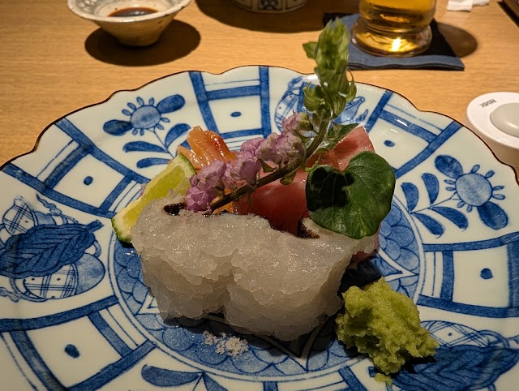
| 営業時間 | 月・火・木・日 12:00〜14:30, 17:00〜22:00 ／ 金・土 12:00〜14:30, 17:00〜23:00 |
|---|---|
| 定休日 | 水曜 |
| 住所 | 滋賀県草津市大路１丁目１３−１１ |
| 予約 | 可 — ☎ 077-567-0008 ／ 公式サイト |
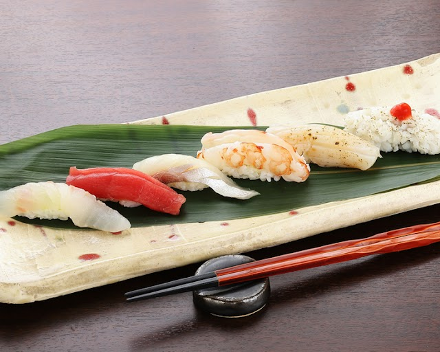
| 営業時間 | 月・火・水・木・金・土・日 17:30〜22:30 |
|---|---|
| 定休日 | なし(要最終確認) |
| 住所 | 滋賀県草津市大路１丁目１５−３７ |
| 予約 | 可 — ☎ 077-516-1777 |
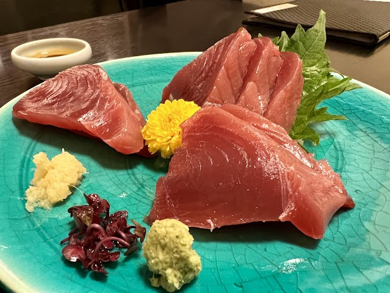
| 営業時間 | 火・木・金・土・日 12:00〜14:00, 17:00〜21:00 ／ 水 17:00〜21:30 |
|---|---|
| 定休日 | 月曜 |
| 住所 | 滋賀県草津市西渋川１丁目３−２５ サンライズ西田 |
| 予約 | 可 — ☎ 077-561-8633 ／ 公式サイト |
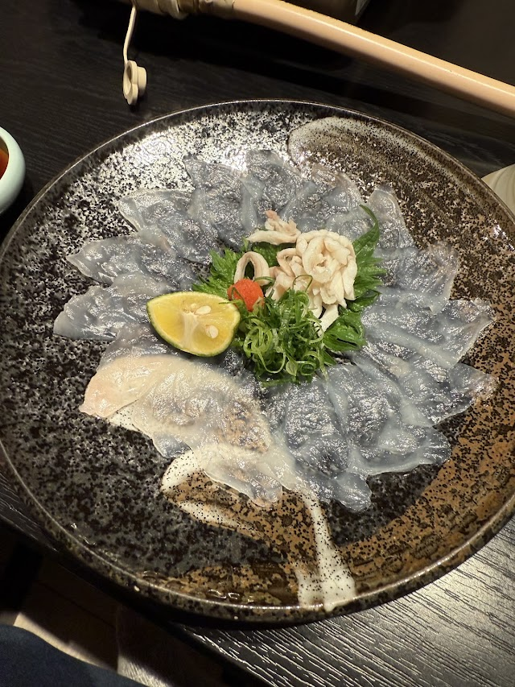
| 営業時間 | 火・水・木・金・土・日 17:30〜22:00 |
|---|---|
| 定休日 | 月曜 |
| 住所 | 滋賀県草津市大路１丁目１５−４０ |
| 予約 | 可 — ☎ 077-562-2326 ／ 公式サイト |
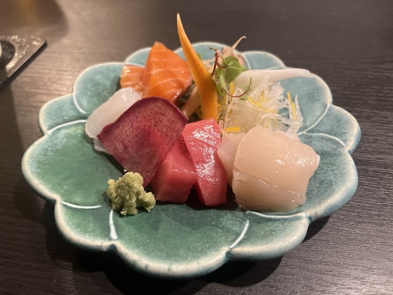
| 営業時間 | 火・水・木・金・土・日 18:00〜23:00 |
|---|---|
| 定休日 | 月曜 |
| 住所 | 滋賀県草津市渋川１丁目５−１９ |
| 予約 | 可 — ☎ 050-5488-1324 ／ 公式サイト |
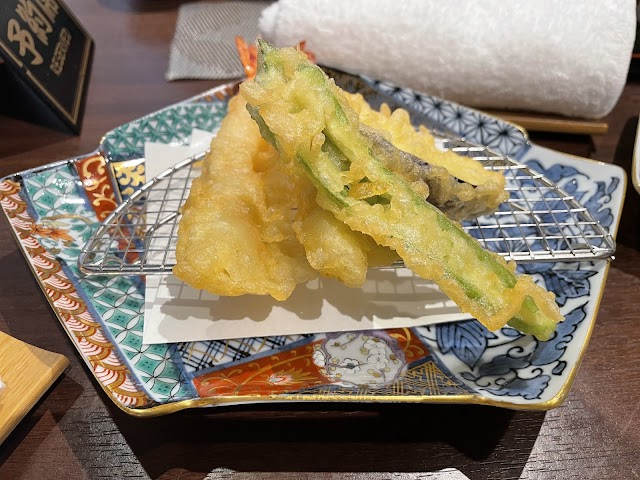
| 営業時間 | 月・火・木・金・土・日 11:30〜14:30, 17:30〜22:00 |
|---|---|
| 定休日 | 水曜 |
| 住所 | 滋賀県草津市渋川１丁目３−２５ LAスクエア2 号館１F |
| 予約 | 可 — ☎ 090-3274-2868 ／ 公式サイト |
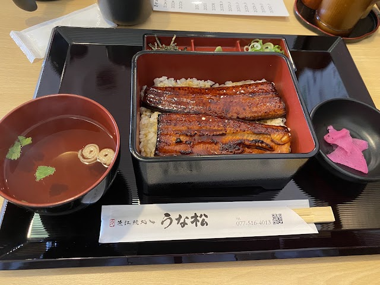
| 営業時間 | 月・火・水・木・金・土・日 11:00〜14:00 |
|---|---|
| 定休日 | なし(要最終確認) |
| 住所 | 滋賀県草津市野路８丁目２２−６ |
| 予約 | 可 — ☎ 077-516-4013 ／ 公式サイト |
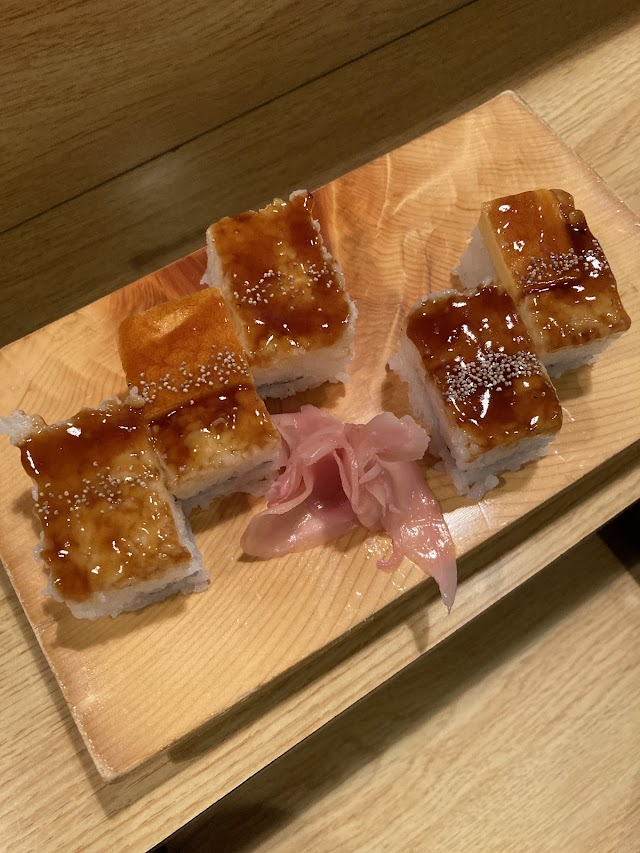
| 営業時間 | 月・水・木・金・土・日 11:00〜14:00, 17:00〜22:00 |
|---|---|
| 定休日 | 火曜 |
| 住所 | 滋賀県草津市草津２丁目１０−２４ |
| 予約 | 可 — ☎ 077-562-0378 ／ 公式サイト |
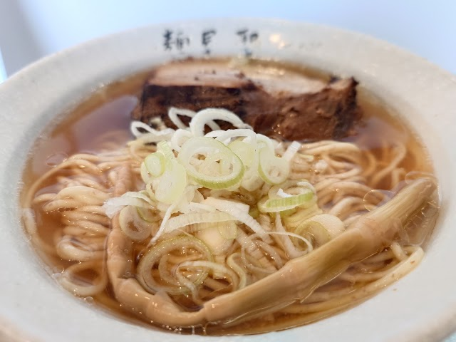
| 営業時間 | 月・火・水・金・土・日 11:00〜14:45, 17:00〜21:45 |
|---|---|
| 定休日 | 木曜 |
| 住所 | 滋賀県草津市野路４丁目６−１ |
| 予約 | 要確認 — ☎ 077-514-7815 ／ 公式サイト |
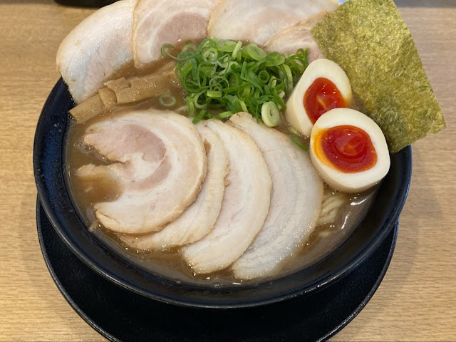
| 営業時間 | 月・火・水・木・金・土・日 11:00〜14:50, 18:00〜22:50 |
|---|---|
| 定休日 | なし(要最終確認) |
| 住所 | 滋賀県草津市野路４丁目２−７ |
| 予約 | 要確認 — ☎ 077-567-4711 ／ 公式サイト |
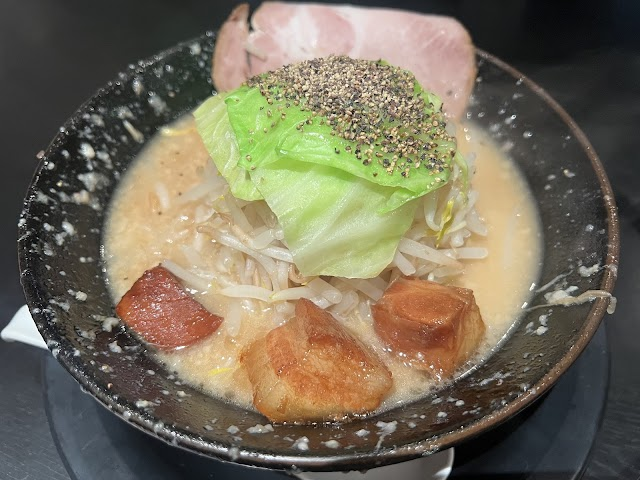
| 営業時間 | 火・水・木・金・土・日 11:30〜15:00, 18:00〜22:00 |
|---|---|
| 定休日 | 月曜 |
| 住所 | 滋賀県草津市野村４丁目２−３ |
| 予約 | 要確認 — ☎ 077-561-7748 |
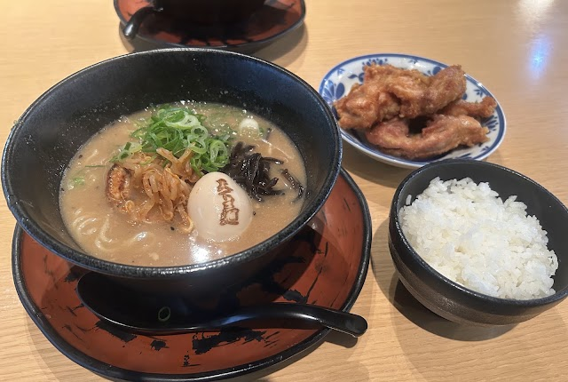
| 営業時間 | 火・水・木・金・土・日 11:00〜1:00 |
|---|---|
| 定休日 | 月曜 |
| 住所 | 滋賀県草津市東矢倉１丁目５−３０ |
| 予約 | 要確認 — ☎ 077-566-5135 |
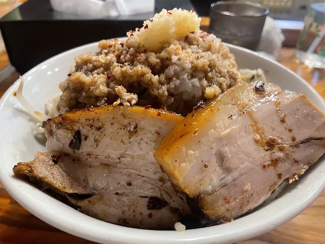
| 営業時間 | 月・火・水・木・金・土・日 11:00〜0:00 |
|---|---|
| 定休日 | なし(要最終確認) |
| 住所 | 滋賀県草津市野路１丁目１２−２３ |
| 予約 | 要確認 — ☎ 077-562-0730 |
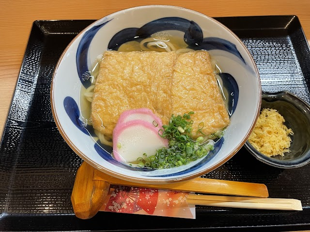
| 営業時間 | 月・金 11:00〜14:30, 18:00〜21:00 ／ 火・木 11:00〜14:30 ／ 土・日 11:00〜15:00, 18:00〜21:00 |
|---|---|
| 定休日 | 水曜 |
| 住所 | 滋賀県草津市矢橋町97−１ |
| 予約 | 要確認 — ☎ 077-509-7969 |
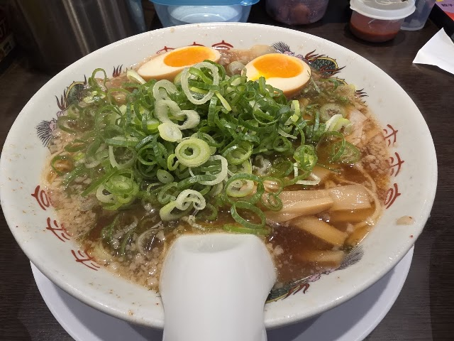
| 営業時間 | 月・火・水・木・日 11:00〜23:30 ／ 金・土 11:00〜0:00 |
|---|---|
| 定休日 | なし(要最終確認) |
| 住所 | 滋賀県野洲市小篠原７６３−１ |
| 予約 | 要確認 — ☎ 077-587-5556 ／ 公式サイト |
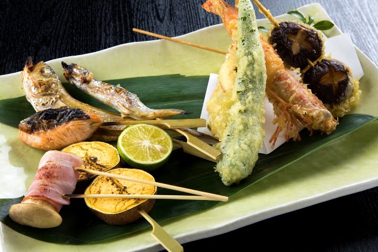
| 営業時間 | 月・火・水・木・金・土 17:30〜23:00 |
|---|---|
| 定休日 | 日曜 |
| 住所 | 滋賀県草津市大路１丁目１−１ Ｌｔｙ９３２ ２Ｆ |
| 予約 | 可 — ☎ 077-507-7480 ／ 公式サイト |
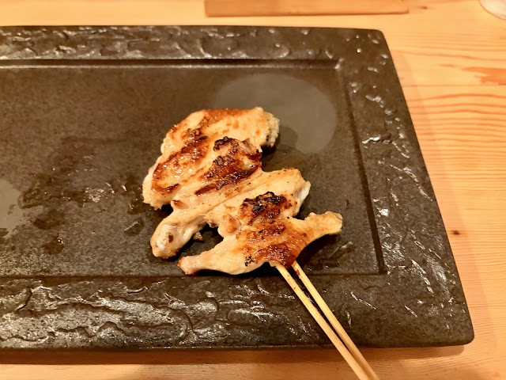
| 営業時間 | 月・火・水・木・金・土 17:00〜23:00 |
|---|---|
| 定休日 | 日曜 |
| 住所 | 滋賀県草津市野路１丁目１２−２３ エスポワール 1FA号 |
| 予約 | 要確認 — ☎ 077-518-8377 |
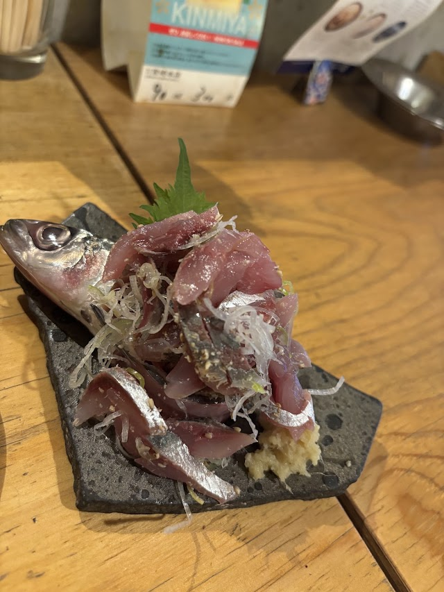
| 営業時間 | 月・火・水・木・金・土・日 18:00〜0:00 |
|---|---|
| 定休日 | なし(要最終確認) |
| 住所 | 滋賀県草津市大路２丁目１−４１ 太田ビル 1F |
| 予約 | 要確認 — ☎ 050-5486-9196 ／ 公式サイト |
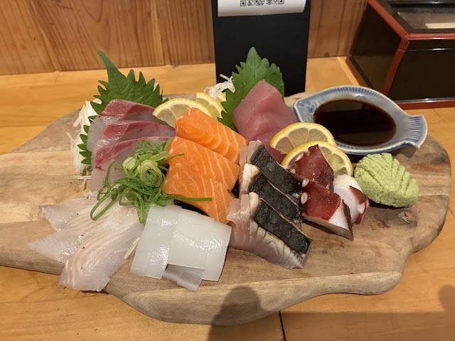
| 営業時間 | 月・火・水・木 12:00〜23:00 ／ 金・土 12:00〜0:00 ／ 日 12:00〜22:00 |
|---|---|
| 定休日 | なし(要最終確認) |
| 住所 | 滋賀県草津市大路１丁目１−１ エルティ 932 B１ |
| 予約 | 可 — ☎ 050-5485-3956 ／ 公式サイト |
| 営業時間 | 月・火・水・木・日 17:30〜0:00 ／ 金・土 17:30〜3:00 |
|---|---|
| 定休日 | なし(要最終確認) |
| 住所 | 滋賀県草津市大路１丁目１５−４０ |
| 予約 | 可 — ☎ 050-5486-8884 ／ 公式サイト |
| 営業時間 | 月・火・水・木・金・土・日 17:00〜0:00 |
|---|---|
| 定休日 | なし(要最終確認) |
| 住所 | 滋賀県草津市大路２丁目３−１ アトリエ3号館 |
| 予約 | 可 — ☎ 050-5484-2595 ／ 公式サイト |
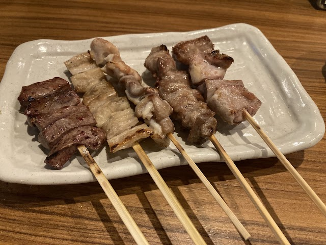
| 営業時間 | 月 14:00〜23:00 ／ 火・水・木 16:00〜23:00 ／ 金 12:00〜23:30 ／ 土 14:00〜23:30 ／ 日 14:00〜22:30 |
|---|---|
| 定休日 | なし(要最終確認) |
| 住所 | 滋賀県草津市大路１丁目１０−１ 第2 南洋軒ビル B1F |
| 予約 | 可 — ☎ 050-5486-2140 ／ 公式サイト |
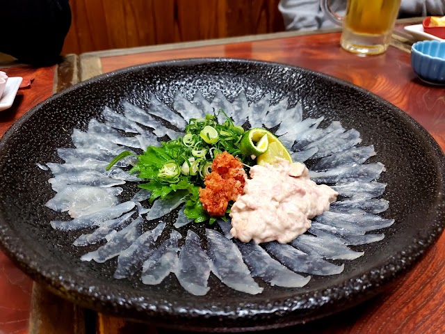
| 営業時間 | 月・火・水・木・金 11:30〜14:00, 16:30〜23:00 ／ 土 16:30〜23:00 |
|---|---|
| 定休日 | 日曜 |
| 住所 | 滋賀県草津市西大路町１０−５ |
| 予約 | 可 — ☎ 077-564-0901 |
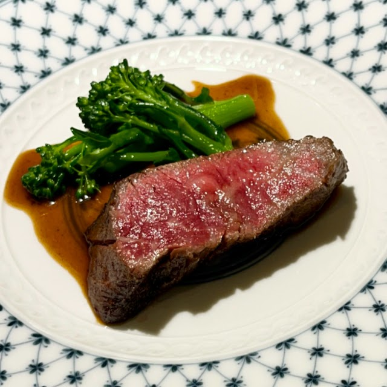
| 営業時間 | 月・火・水・木・金・土・日 12:00〜15:00, 18:30〜21:30 |
|---|---|
| 定休日 | なし(要最終確認) |
| 住所 | 滋賀県草津市野路町４６９−４ 2Ｆ |
| 予約 | 可 — ☎ 077-564-6617 ／ 公式サイト |
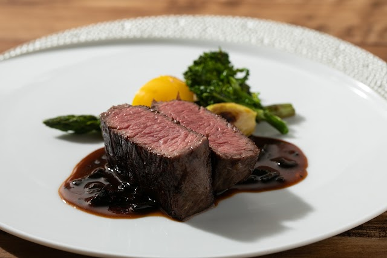
| 営業時間 | 月・火・水・木・金・土・日 17:30〜4:00 |
|---|---|
| 定休日 | なし(要最終確認) |
| 住所 | 滋賀県草津市渋川１丁目３−２４ LAスクエア 1F |
| 予約 | 可 — ☎ 077-599-0133 ／ 公式サイト |
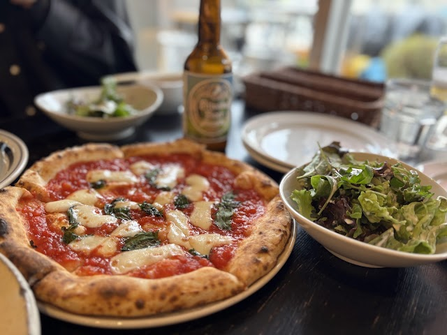
| 営業時間 | 月・火・水・木・金・土・日 11:00〜22:30 |
|---|---|
| 定休日 | なし(要最終確認) |
| 住所 | 滋賀県草津市大路１丁目３−１８−３ クサツココリバ内 |
| 予約 | 可 — ☎ 077-569-5291 ／ 公式サイト |
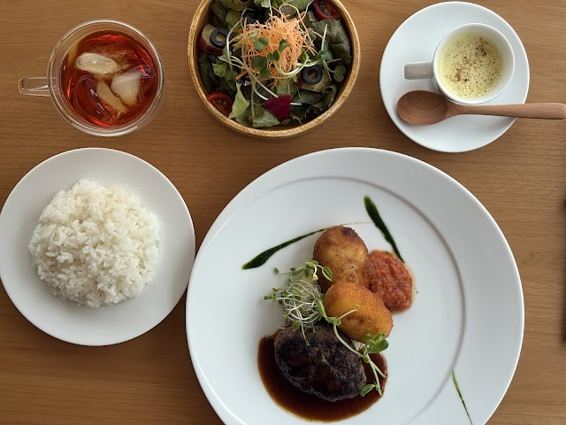
| 営業時間 | 火・水・木・金・土 11:00〜14:00, 17:00〜22:00 ／ 日 11:00〜14:00 |
|---|---|
| 定休日 | 月曜 |
| 住所 | 滋賀県草津市志那中町１３８ |
| 予約 | 可 — ☎ 077-575-0843 ／ 公式サイト |
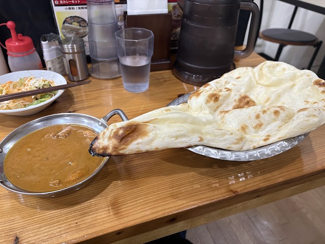
| 営業時間 | 月・火・水・木・金・土・日 11:00〜14:30, 17:00〜22:00 |
|---|---|
| 定休日 | なし(要最終確認) |
| 住所 | 滋賀県草津市野路２丁目２３−５ |
| 予約 | 可 — ☎ 077-516-4259 ／ 公式サイト |
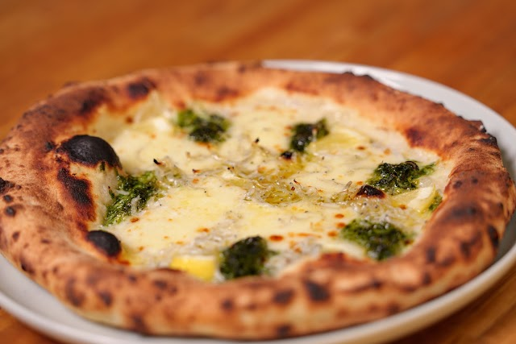
| 営業時間 | 月・火・水・木・金・土・日 17:00〜0:00 |
|---|---|
| 定休日 | なし(要最終確認) |
| 住所 | 滋賀県草津市野路１丁目１４−３８ サンマール南草津 102 |
| 予約 | 可 — ☎ 077-561-3373 ／ 公式サイト |
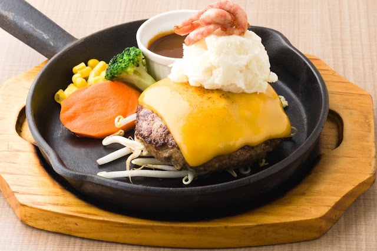
| 営業時間 | 月・木・金・土・日 11:00〜15:00, 17:00〜21:30 |
|---|---|
| 定休日 | 火・水曜 |
| 住所 | 滋賀県草津市追分南５丁目１１−１０ |
| 予約 | 可 — ☎ 077-567-4788 ／ 公式サイト |
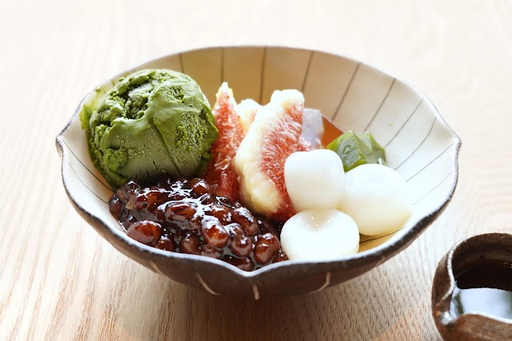
| 営業時間 | 月・火・木・金・土・日 10:00〜17:00 |
|---|---|
| 定休日 | 水曜 |
| 住所 | 滋賀県草津市上笠２丁目１１−８ |
| 予約 | 可 — ☎ 077-562-3424 ／ 公式サイト |
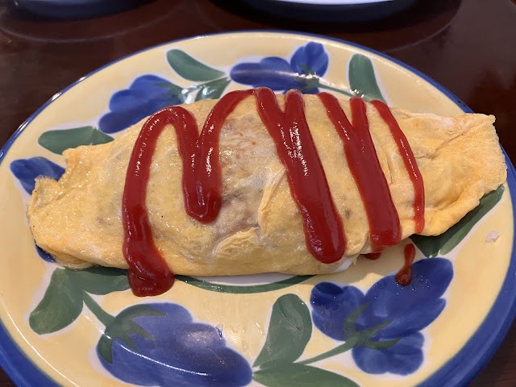
| 営業時間 | 月・火・水・木・金・土・日 8:30〜18:00 |
|---|---|
| 定休日 | なし(要最終確認) |
| 住所 | 滋賀県草津市草津２丁目１０−２７ |
| 予約 | 要確認 — ☎ 077-562-0525 ／ 公式サイト |
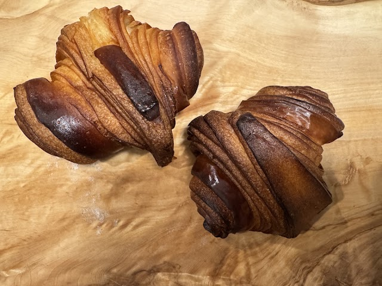
| 営業時間 | 水・木・金 9:00〜19:00 ／ 土・日 7:30〜19:00 |
|---|---|
| 定休日 | 月・火曜 |
| 住所 | 滋賀県草津市追分南６丁目１９−８ |
| 予約 | 要確認 — ☎ 077-514-8810 ／ 公式サイト |
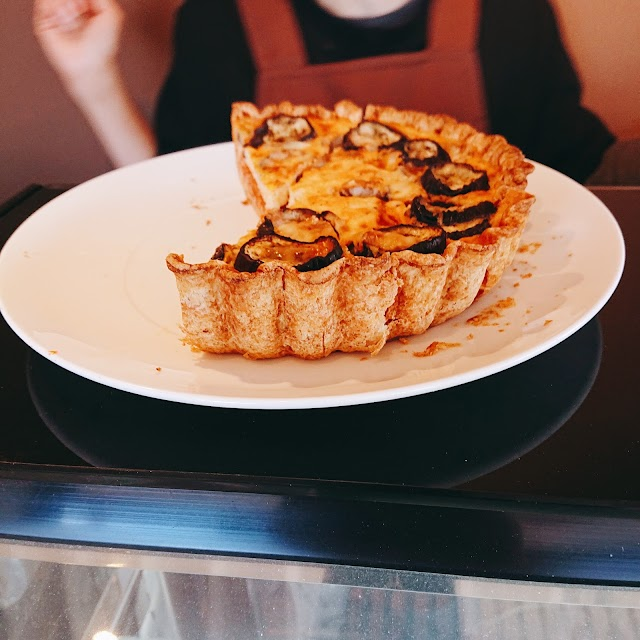
| 営業時間 | 木・金・土 11:00〜17:00 |
|---|---|
| 定休日 | 月・火・水・日曜 |
| 住所 | 滋賀県草津市若竹町５−１０ |
| 予約 | 要確認 — ☎ 077-548-8592 ／ 公式サイト |
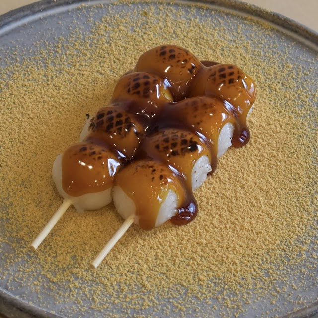
| 営業時間 | 月・火・水・金・土・日 10:00〜17:00 |
|---|---|
| 定休日 | 木曜 |
| 住所 | 滋賀県草津市野路東５丁目２５−２３ 102 |
| 予約 | 可 — 公式サイト |
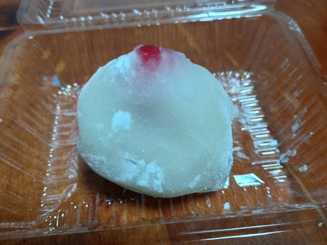
| 営業時間 | 月・水・木・金・土・日 8:30〜18:00 |
|---|---|
| 定休日 | 火曜 |
| 住所 | 滋賀県草津市上笠４丁目３０−１１ |
| 予約 | 要確認 — ☎ 077-564-6746 |
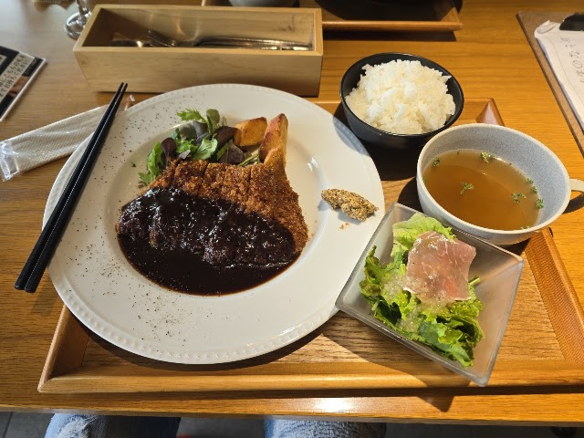
| 営業時間 | 月・火・木・金・土・日 11:00〜17:00 |
|---|---|
| 定休日 | 水曜 |
| 住所 | 滋賀県草津市川原町２９８−１ 若竹福祉総合学院 内 |
| 予約 | 可 — ☎ 077-599-5390 ／ 公式サイト |
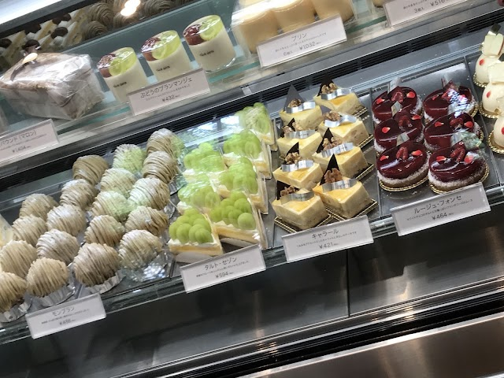
| 営業時間 | 月・火・水・木・金・土・日 9:00〜18:00 |
|---|---|
| 定休日 | なし(要最終確認) |
| 住所 | 滋賀県守山市吉身３丁目１９−１５ |
| 予約 | 可 — 公式サイト |
本ガイドは個人利用目的で作成。掲載情報は2026年9月時点の調査に基づく。写真出典: Google Maps投稿写真(©各投稿者/Google)。